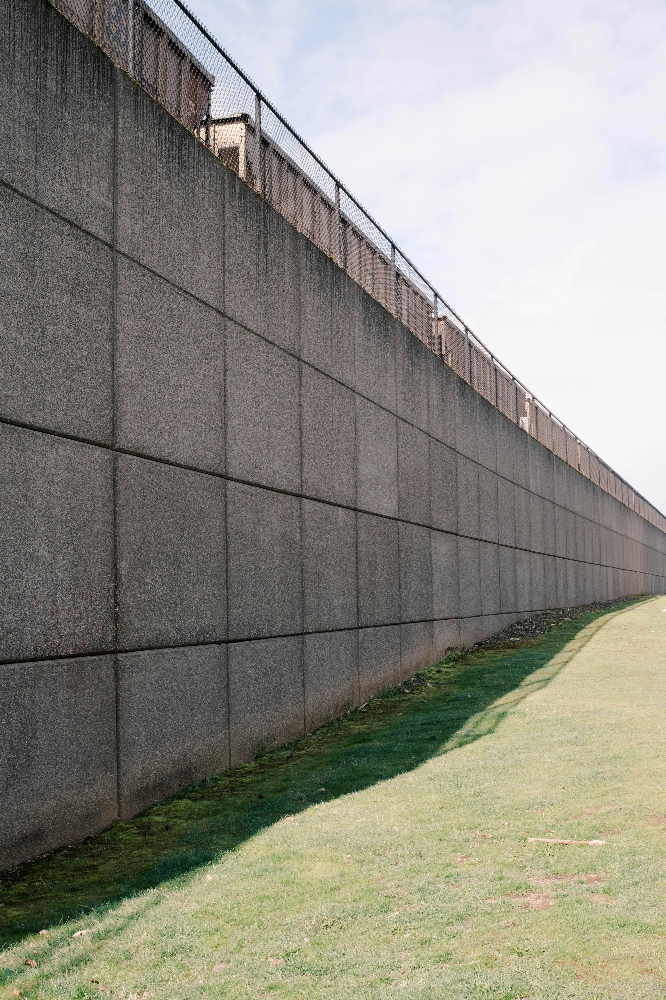
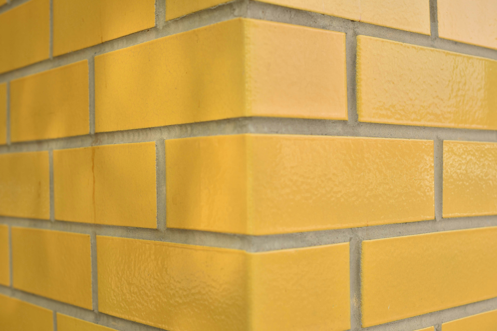

The Foundation of Perfect Walls
Every great finish begins with preparation. Our wall skimming (screeding) services ensure smooth, flawless surfaces that are ready for painting or decorative finishes. We correct cracks, rough textures, and uneven walls to create the perfect foundation.
Benefits
- Prepares walls for decorative finishes.
- Reduces cracks and uneven surfaces.
- Enhances durability and beauty of paintwork.
- Professional smooth finish guaranteed.
Gallery



Bring Your Dream Project to Life
Contact us today to begin your wall skimming(screeding) journey with homes and gardens planet.
Get in Touch